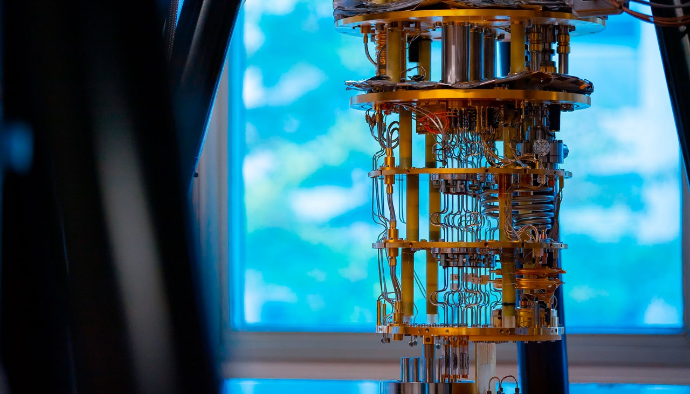
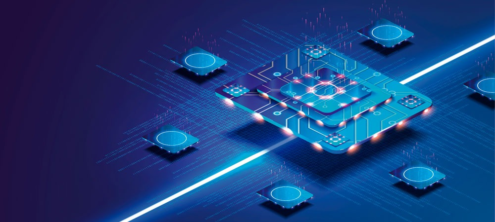

La computación cuántica es un campo multidisciplinario que aúna aspectos de ciencias de la computación, física y matemáticas y utiliza mecánicas cuánticas para resolver problemas complejos más rápido que las computadoras clásicas. El campo de la computación cuántica incluye investigación de hardware y desarrollo de aplicaciones. Las computadoras cuánticas son capaces de resolver ciertos tipos de problemas más rápido que las computadoras clásicas, ya que sacan partido de los efectos de la mecánica cuántica, como la superposición y la interferencia cuántica. Algunas aplicaciones en las que las computadoras cuánticas pueden brindar dicho impulso de velocidad son el machine learning (ML), la optimización y la simulación de sistemas físicos. Entre los casos de uso eventuales se incluyen la optimización de la cartera en finanzas o la simulación de sistemas químicos; en definitiva, la solución de problemas que actualmente no pueden abordar ni las supercomputadoras más potentes del mercado.
¿Cuáles son las ventajas de la computación cuántica?
La principal ventaja de la computación cuántica radica en su capacidad para
resolver problemas que hoy en día resultan prácticamente imposibles para las
computadoras clásicas. Gracias a fenómenos cuánticos como la
superposición y el entrelazamiento, un cúbit
puede representar varios estados al mismo tiempo, lo que permite realizar un
procesamiento paralelo masivo y reducir de manera significativa el tiempo de
cálculo.
En áreas como la medicina, la computación cuántica podría
acelerar el descubrimiento de nuevos fármacos mediante la simulación precisa
de moléculas complejas. Puedes conocer más en este
video sobre computación cuántica en la medicina
.
En finanzas, puede optimizar carteras de inversión con
millones de variables y escenarios en segundos. En
logística, facilita el diseño de rutas y cadenas de
suministro más eficientes, reduciendo costos y emisiones contaminantes.
Otro beneficio es su potencial en el campo de la ciberseguridad.
Mientras que algunos algoritmos de cifrado tradicionales podrían verse
vulnerables, la computación cuántica también abre la puerta a nuevas técnicas de
criptografía cuántica más seguras, basadas en principios como la distribución de
claves cuánticas (QKD).
¿Qué es la mecánica cuántica?
La mecánica cuántica es el área de la física que estudia el comportamiento de las partículas en un ámbito microscópico. A niveles subatómicos, las ecuaciones que describen cómo se comportan las partículas son diferentes de las que describen el mundo macroscópico que nos rodea. Las computadoras cuánticas aprovechan estos comportamientos para realizar cálculos de una forma completamente nueva.
¿Qué es un cúbit?
Los bits cuánticos, o cúbits, están representados por partículas cuánticas. La manipulación de cúbits por dispositivos de control es el núcleo del poder de procesamiento de una computadora cuántica. Los cúbits en las computadoras cuánticas son análogos a los bits en las computadoras clásicas. En esencia, el procesador de una máquina clásica hace todo su trabajo manipulando bits. De manera similar, el procesador cuántico hace todo su trabajo procesando cúbits.
¿En qué se diferencian los cúbits de los bits clásicos?
En la computación clásica, un bit es una señal electrónica que está encendida o apagada. El valor del bit clásico puede ser uno (encendido) o cero (apagado). Sin embargo, debido a que el cúbit se basa en las leyes de la mecánica cuántica, se puede colocar en una superposición de estados.
¿Cuáles son los principios de la computación cuántica?
Una computadora cuántica funciona usando principios cuánticos. Los principios cuánticos requieren un nuevo diccionario de términos para comprenderlos por completo, términos que incluyen superposición, entrelazamiento y decoherencia. Vamos a entender estos principios a continuación.
Superposición:
La superposición establece que, al igual que las ondas en la física clásica, puede agregar dos o más estados cuánticos y el resultado será otro estado cuántico válido. Por el contrario, también puede representar cada estado cuántico como una suma de dos o más estados distintos. Esta superposición de cúbits le da a las computadoras cuánticas su paralelismo inherente, permitiéndoles procesar millones de operaciones simultáneamente.
Entrelazamiento:
El entrelazamiento cuántico ocurre cuando dos sistemas se vinculan tan estrechamente que el conocimiento sobre uno le brinda un conocimiento inmediato sobre el otro, sin importar cuán separados estén. Los procesadores cuánticos pueden sacar conclusiones sobre una partícula midiendo otra. Por ejemplo, pueden determinar que si un bit gira hacia arriba, el otro siempre girará hacia abajo y viceversa. El entrelazamiento cuántico permite que las computadoras cuánticas resuelvan problemas complejos más rápido. Cuando se mide un estado cuántico, la función de onda colapsa y el estado se mide como cero o como uno. En este estado conocido o determinista, el bit actúa como un bit clásico. El entrelazamiento es la capacidad de los cúbits para correlacionar su estado con otros cúbits.
Decoherencia:
La decoherencia es la pérdida del estado cuántico en un bit. Los factores ambientales, como la radiación, pueden provocar el colapso del estado cuántico de los cúbits. Un gran desafío de ingeniería en la construcción de una computadora cuántica es diseñar las diversas características que intentan retrasar la decoherencia del estado, como la construcción de estructuras especiales que protegen los cúbits de los campos externos.
¿Cuáles son los componentes de una computadora cuántica?
Las computadoras cuánticas tienen dos grandes bloques: el
hardware (la parte física) y el
software (los algoritmos y programas que aprovechan los cúbits).
1. Hardware cuántico
Es la parte física de la computadora cuántica y se organiza en tres planos principales:
Plano de datos cuánticos:
Es el corazón de la computadora cuántica. Aquí están los
cúbits físicos y los dispositivos necesarios para mantenerlos estables,
como sistemas de refrigeración que operan a temperaturas cercanas al cero absoluto.
Plano de control y medida:
Envía señales (microondas o pulsos láser) a los cúbits para manipularlos
y luego mide sus estados. Es el equivalente al "teclado y pantalla" del mundo cuántico.
Plano del procesador de control y procesador host:
Funciona como un traductor entre el mundo clásico y el cuántico.
El procesador host interpreta los algoritmos, los convierte en instrucciones cuánticas
y recoge los resultados de los cúbits.

2. Software cuántico
Es la parte lógica que indica qué operaciones realizar sobre los cúbits.
Implementa algoritmos cuánticos que aprovechan fenómenos como
la superposición y el entrelazamiento para resolver problemas complejos.
Permite aplicaciones en simulación molecular, optimización, inteligencia artificial y ciberseguridad.
Usa herramientas y bibliotecas de desarrollo como
Qiskit (IBM) o Cirq (Google).

En resumen: el hardware cuántico es el cuerpo,
el software cuántico es la mente,
y el procesador host es el traductor que conecta ambos mundos.